Administrador de productos: Terminados, Utilities, Materia prima y Servicios¶
Ubicación¶
| Módulo: | Real Q |
|---|---|
| Grupo: | Materia Prima |
| Descripción: | Administrador de Productos & servicios |
Introducción¶
- El administrador de productos es el origen de los procesos de inventario; en él se administra toda la información referente a los productos, servicios y materia prima que son manejados por la empresa.
- 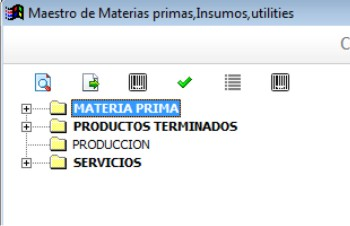
El Administrador de Productos le permitirá entre otras cosas:
Crear/editar/eliminar productos terminados, materia prima y servicios
Buscar productos
Realizar la configuración contable para cada producto
Establecer características esenciales para el manejo de la materia prima: presentación, perfil de análisis, etc.
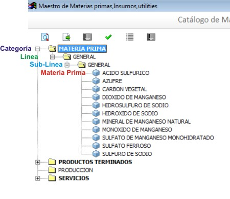
Categorías de Productos¶
Las categorías son el primer nivel de calificación de los productos; pueden ir alojadas dentro de alguno de las 4 divisiones principales: Materia prima, producto terminado, servicios y producción. No se crean productos directamente dentro de una categoría, es necesario crear una subcategoría.
Crear una Categoría¶
Para crear una Categoría de productos siga los siguientes pasos:
Ejecute la opción Administrador de Productos
En la carpeta “Materia prima” haga click derecho, seleccione la opción
 Nueva Categoría en el menu desplegado
Nueva Categoría en el menu desplegadoEl sistema creará una carpeta con el siguiente texto : Digite el nombre de la Categoría
Reemplace el texto: Digite el nombre de la Categoría con el nombre de la Categoría correspondiente y confirme presionando la tecla ENTER
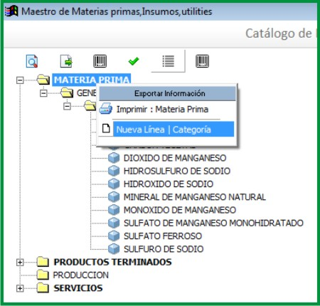
Editar una Categoría¶
Para editar una Categoría de productos siga los siguientes pasos:
- Ubique en el árbol la Categoría que quiere editar y selecciónela haciendo click sobre ella
- Haga click-derecho sobre la Categoría seleccionada para desplegar el menú contextual
- Seleccione la opción
 Modificar Categoría
Modificar Categoría - El nombre de la Categoría se marcará en azul, indicando que puede editar el texto
- Edite el nombre de la Categoría haciendo los cambios necesarios y confirme con ENTER
Eliminar una Categoría¶
Para eliminar una Categoría de productos siga los siguientes pasos:
- Ubique en el árbol la Categoría que quiere eliminar y selecciónela haciendo click sobre ella
- Haga click-dereho sobre la Categoría seleccionada para desplegar el menú contextual
- Seleccione la opción
 Eliminar Categoría
Eliminar Categoría - El sistema le pedirá que confirme su intención de eliminar la Categoría
- Confirme la solicitud de eliminación
Nota
No podrá eliminar Categorías que contengan sub-Categorías, en estos casos la opción : Eliminar Categoría, aparecerá desactivada
Sub-Categorías de Productos¶
Introducción¶
Las sub-Categorías de productos son el segundo nivel de clasificación de la mercancía, las sub-Categorías se alojan dentro de las Categorías y son las sub-Categorías las que alojan a los productos/servicios.
Crear una Sub-Categoría¶
Para crear una sub-Categoría de productos/servicios siga los siguientes pasos:
Ubique en el árbol la Categoría en la cual desea crear la nueva sub-Categoría y selecciónela haciendo click sobre ella
Haga click-dereho sobre la Categoría seleccionada para desplegar el menú contextual
Seleccione la opción
Nueva sub CategoríaEl sistema creará una carpeta con el siguiente texto : Digite el nombre de la sub Categoría
Reemplace el texto: Digite el nombre de la sub Categoría con el nombre de la sub Categoría correspondiente y confirme presionando la tecla ENTER
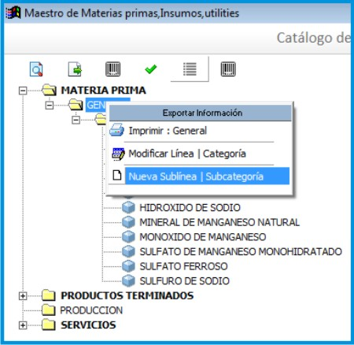
Editar una Sub Categoría¶
Para editar una sub Categoría de productos/servicios siga los siguientes pasos:
- Ubique en el árbol la sub Categoría que desea editar y selecciónela haciendo click sobre ella
- Haga click-derecho sobre la sub Categoría seleccionada para desplegar el menú contextual
- Seleccione la opción Modificar sub Categoría
- El nombre de la sub Categoría se marcará en azul, indicando que puede editar el texto
- Edite el nombre de la sub Categoría haciendo los cambios necesarios y confirme con ENTER
Eliminar una Sub Categoría¶
- Ubique en el árbol la sub Categoría que desea eliminar y selecciónela haciendo click sobre ella
- Haga click-derecho sobre la sub Categoría seleccionada para desplegar el menú contextual
- Seleccione la opción Eliminar sub Categoría
- El sistema le pedirá que confirme su intención de eliminar la sub Categoría
- Confirme la solicitud de eliminación
Nota
No podrá eliminar sub Categorías que contengan productos/servicios, en estos casos la opción : Eliminar sub Categoría, aparecerá desactivada
Crear un Producto¶
El proceso de creación del producto solo permite aportar algunos datos básicos, si desea modificar características complejas, entonces vea: Configuración avanzada del producto
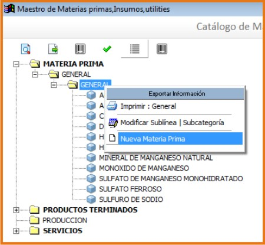
- Ejecute la opción Administrador de Productos
- Escoja la carpeta de la rama principal que convenga: Materia prima, producto terminado, servicios y producción;
- Escoja la Categoría apropiada
- Elija una Sub-Categoría; sobre ella haga click derecho y luego seleccione la opción
El sistema desplegará una ventana solicitando la siguiente información:
Nombre: Nombre del producto o la descripción del servicio. *
Referencia: Si no la maneja, deje la que el sistema coloca por defecto. *
Código EAN: Código de barras presente en el empaque del producto, si aplica. *
UM: Unidad de medida para el inventario, ej: Unidad, Metro, Litro. *
Margen de IVA: Porcentaje de IVA con el cual está gravado el producto/servicio. *
Los campos señalados con un * son obligatorios
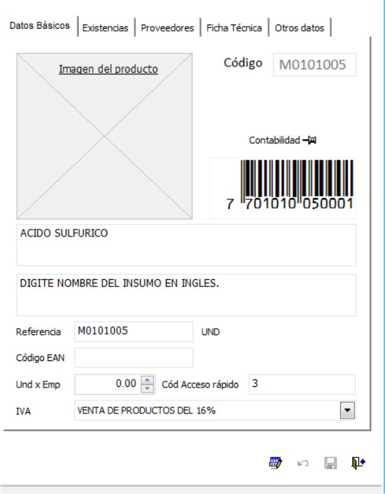
El código es único para cada producto/servicio y es generado por el sistema.
- Llene los campos solicitados y finalice el proceso presionando el botón Guardar para cerrar la ventana o el botón Guardar y Continuar para continuar creando productos/servicios dentro de la Sub Categoría actual.
Buscar un Producto/Servicio en el árbol¶
Con un catálogo muy extenso, puede ser difícil ubicar un producto/servicio en el árbol; por esta razón existe un mecanismo de búsqueda que le permitirá ubicar fácilmente el ítem que necesite.
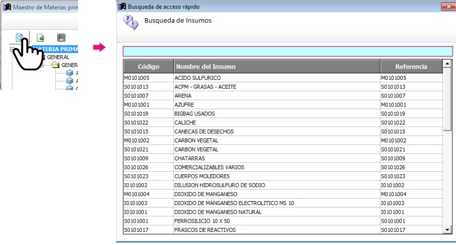
Para buscar un productos/servicio siga los siguientes pasos:
- En la ventana principal del Administrador de Productos haga click en icono

- El sistema despliega la búsqueda de productos/servicios
- Digite el nombre del producto/servicio
- Confirme la selección colocándose sobre el producto/servicio y presionando la tecla ENTER o haciendo doble-click
- El sistema ubicará el producto/servicio en el árbol y desplegará sus características en el panel de detalles
Editar un Producto/Servicio¶
Para editar un productos/servicio siga los siguientes pasos:
- Ubique el producto/servicio en el árbol, vea : Buscar un Producto/Servicio en el árbol.
- En el panel de detalles haga click en el icono para habilitar la edición de las propiedades del producto/servicio
- Realice los cambios pertinentes
- En el panel de detalles haga click en el icono
 para guardar los cambios
para guardar los cambios
Eliminar un Producto/Servicio¶
Para eliminar un productos/servicio siga los siguientes pasos:
- Ubique el producto/servicio en el árbol, vea : Buscar un Producto/Servicio en el árbol.
- Haga click-derecho sobre el producto/servicio seleccionado para desplegar el menú contextual
- Seleccione la opción Eliminar producto o Eliminar servicio según el caso
- El sistema pedirá confirmar la solicitud de eliminación
- Confirme la solicitud de eliminación
Nota
No podrá eliminar productos que presenten movimientos en el kardex o servicios que hayan sido facturados.
Descontinuar un Producto/Servicio¶
Después de un tiempo considerable creando productos/servicios se encontrará con la necesidad de eliminar algunos que ya no se vayan a seguir utilizando, sin embargo el sistema no permitirá eliminar productos/servicios que hayan tenido algún tipo de movimiento debido a que esta información es necesaria a nivel estadístico; por esta razón existe la posibilidad de descontinuar productos; al descontinuar un producto este desaparece de todas las operaciones de inventario, por ejemplo : entradas, salidas, traslados y únicamente es visible en las estadísticas de las operaciones registradas previas a su discontinuación.
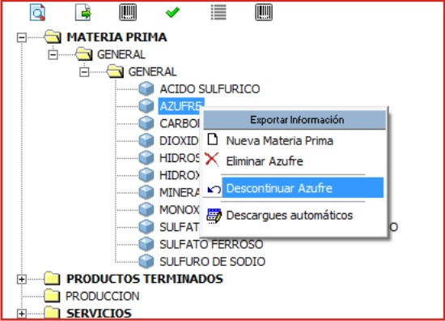
Para descontinuar un producto/servicio siga los siguientes pasos:
- Ubique el producto/servicio en el árbol, vea : Buscar un Producto/Servicio en el árbol.
- Haga click-dereho sobre el producto/servicio seleccionado para desplegar el menú contextual
- Seleccione la opción
 Descontinuar <<producto/servicio>>
Descontinuar <<producto/servicio>> - El sistema pedirá confirmar la solicitud de descontinuar el producto/servicio
- Confirme la solicitud de discontinuación
Nota
No podrá descontinuar productos que presenten existencias en el inventario
Reactivar Producto/Servicio¶
El proceso de reactivación es inverso al proceso de discontinuación, consiste volver a activar productos que se encuentren descontinuados para permitir nuevamente su uso.
Para reactivar productos/servicios siga los siguientes pasos:
- En la ventana principal del Administrador de Productos haga click en icono

- El sistema abrirá una ventana donde se listan los productos descontinuados
- La ventana posee una casilla de búsqueda que le permitirá ubicar facilmente el producto que requiera
- Para reactivar el producto/servicio ubíquelo en el listado y seleccione la casilla de verificación que se encuentra en la última columna
- Una vez seleccionados los productos que desea reactivar, presione el botón Reactivar
Re-Clasificar (Cambiar de Categoría) Producto/Servicio¶
La correcta clasificación de los productos/servicios en Categorías y sub Categorías, es muy importante porque nos permite:
- Ubicar fácilmente y de manera lógica los productos/servicios en el árbol
- Obtener estadísticas de ventas e inventarios por medio de esta clasificación
- Establecer la interface contable de los productos/servicios por medio en esta clasificación
- Durante el proceso de creación de productos/servicios, será necesario mover productos/servicios de una Categoría X a una Categoría Y, o incluso, a una sub Categoría diferente a la actual; Esta es la función de la re-clasificación de productos/servicios.
- 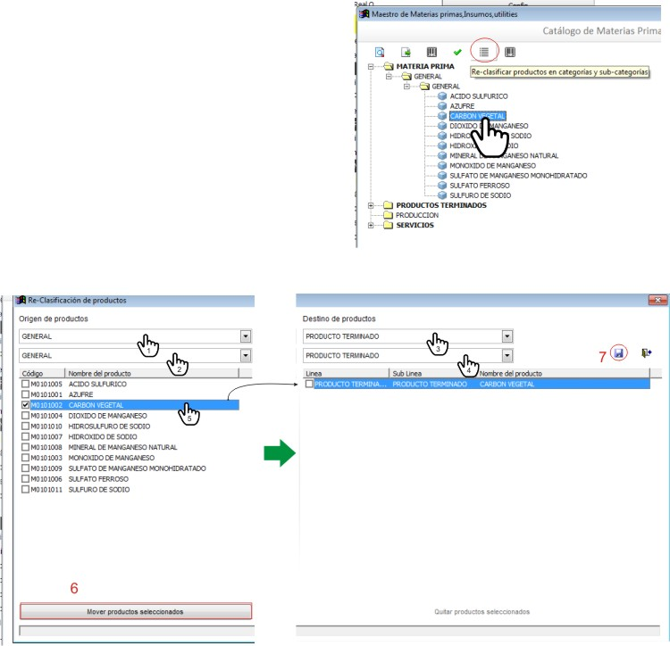
La re-clasificación le permitirá estructurar el Administrador de Productos/servicios de la manera que considere mas provechosa para la empresa
Para re-clasificar productos/servicios siga los siguientes pasos:
Ejecute la opción Administrador de Productos
Haga click en Re-clasificar productos en categorías y sub-categorías 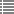 en la cabecera de la ventana.
- Del lado izquierdo:
- En la lista Origen de productos escoja la Categoría en la cual está el producto actualmente.
- En la lista Seleccione la sub-Categoría origen escoja la sub-Categoría en la cual están los productos actualmente. Aparecerán los productos en la lista de la izquierda.
- Del lado derecho:
- En la lista Destino de productos escoja la Categoría a la cual serán transferidos los productos.
- En la lista Seleccione la sub-Categoría destino escoja la sub-Categoría Categoría Categoría a la cual serán transferidos los productos.
Para reubicar uno o varios productos, márquelos en la lista de la izquierda y haga click en el botón de la parte inferior Mover productos seleccionados. Aparecerán en la lista de la derecha.
Si ya no desea mover uno o varios de los productos, y ya ejecutó el paso anterior, puede marcarlos en la lista de la derecha y presionar quitar productos seleccionados
Cuando esté conforme con las ubicaciones presione
Actualización de Códigos EAN¶
Esta interfaz le permite actualizar los códigos EAN (barras) de cualquier producto, de una manera más sencilla que la interfaz de edición de producto.
Ejecute la opción Administrador de Productos
En la cabecera de la ventana desplegada, haga click en el botón Actualización de códigos EAN
- El cursor se colocará en el primer cuadro de texto. Si sabe el código del producto digítelo o también oprima Enter y búsquelo en la lista de productos, haga click sobre él y presione Enter.
Una vez seleccionado el producto, se mostrará su nombre en el segundo campo de texto y el cursor se posará sobre el tercer campo de texto.
Ingrese el nuevo código EAN con el lector laser. Si el foco permanece en este campo presione Enter para confirmar y cambiar el código. Su lector puede estar configurado para confirmar el cambio automáticamente.
Vera la lista de productos a los que cambió el código en la grilla inferior a los campos de texto.
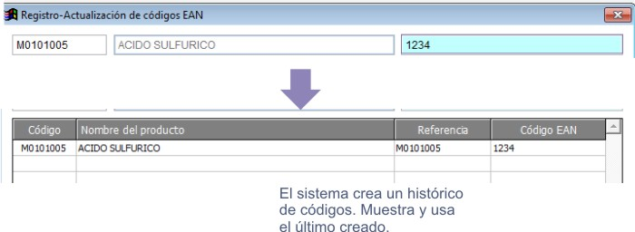
Configuración avanzada del producto¶
- Ubique el producto/servicio en el árbol, vea : Buscar un Producto/Servicio en el árbol.
- Haga click-dereho sobre el producto/servicio seleccionado para desplegar el menú contextual
- Seleccione la opción Descontinuar <<producto/servicio>>
Pestaña Otros¶
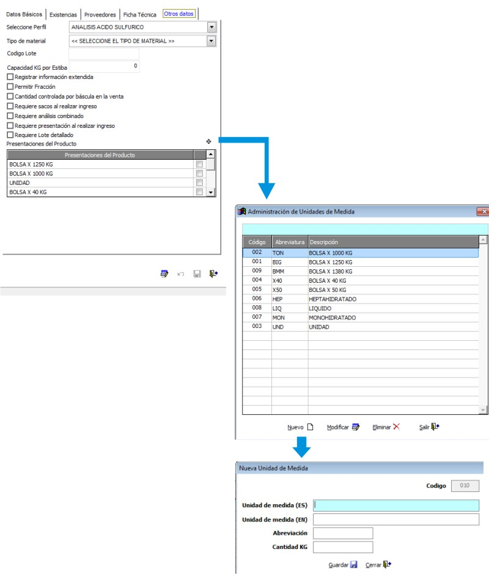
Seleccione Perfil: Escoja el perfil de análisis pertinente al producto de acuerdo a su tipo. Al momento de enlazar un analisis para un ingreso de mercancía aparecerá el formulario elegido en este apartado. Vea, Perfil de análisis. Esta es la manera de escoger el análisis final para cualquier producto terminado.
Código de lote: Se refiere al código para el producto terminado generado por el software administrativo. No aplica para Materia prima.
Requiere Lote detallado: Marque esta opción si requiere un código de lote detallado para cada saco de producto terminado. Solo aplica a EMD. No aplica para Materia Prima.
Kg por Estiba: Peso máximo de producto terminado en Kg para montar en una estiba. No aplica para Materia Prima. - Esta opción es útil para el rotulado -
Requiere Sacos al realizar el ingreso: Algunas materias son recibidas en forma de sacos. Marque esta opción para pedir el número de sacos en el ingreso.
Requiere análisis combinado: Se pueden seleccionar varios contenedores de mercancía entrante para relacionarlos con un mismo análisis.
Requiere presentación al realizar ingreso: Existen productos con varias presentaciones según sus características. Es importante seleccionar los tipos de presentación que pueden ser elegidos para el ingreso.